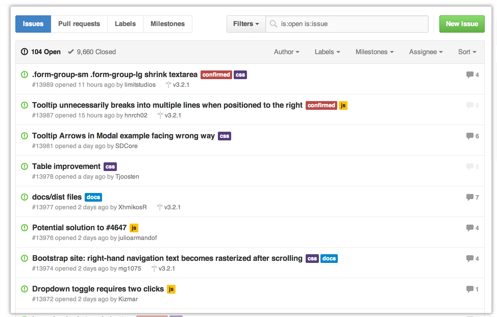
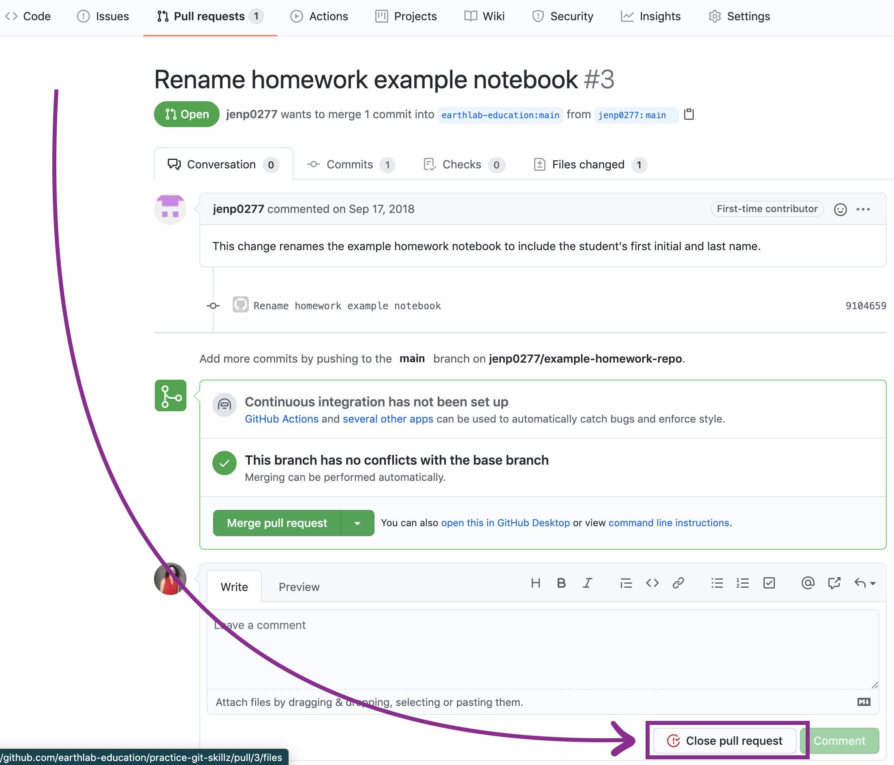

DATASCI 350 - Data Science Computing
Lecture 06 - More Git and GitHub
![]()
Great to see you all again! 😊
Recap and lecture overview 📚
Recap of our last lecture
In our last class, we covered
- How to think in terms of projects
- File and folder organisation tips
- Git installation (
brew install git) - Git configuration
git config --global user.name "Your Name"git config --global user.email your@email.com
- Creating and
init(ialising) repositories - How to
addandcommitchanges - Viewing commit history with
git log - How to use
git checkoutto go back in time - Checking repository status with
git status
Lecture overview
Today we will cover
- How to
pushandpullchanges to and from remote repositories - How to use
.gitignoreto avoid tracking certain files - Creating and managing branches
- How to
cloneandforkrepositories on GitHub - Syncing forked repositories on GitHub
- How to create
issuesandpull requestson GitHub - Other cool GitHub features, such as Gists, Pages, Actions, and CLI
How to rename your branch from master to main
- Many of you may have a default branch called
masterinstead ofmain - This is completely fine! Both names work exactly the same way 👍
- GitHub changed the default branch name from
mastertomainto use more inclusive language - You can read more about the change here
- You don’t have to rename your branch, but if you want to, it’s very easy! 😊
- To rename your current branch from
mastertomain:
- The
-mflag stands for “move” (rename) - After this, your default branch will be called
main - Remember to update any references to
masterin your workflows!
Pushing changes to a remote repository 🚀
Pushing changes to a remote repository
- Last class we learned to
addandcommit. Both stay on your machine - To share your work, you need a remote repository, usually on GitHub
git pushuploads your commits to itgit pulldownloads what other people have added- That is the whole idea. The rest is detail
Pushing changes to a remote repository
- Let’s go back to our
my-projectlocal repository - Check the last commit with
git log - Now, let’s
pushour changes to a remote repository on GitHub - First, we need to create a repository on GitHub
- Go to GitHub and click on the
+sign on the top right corner - Select
New repository - Name your repository
my-project - Click on
Create repository
Now, let’s push our changes to GitHub
- Why do we need to add a remote repository?
- Because we need to tell Git where to
pushour changes! git remote add origin https://github.com/danilofreire/my-project.git:remote: tells Git we are adding a remote repositoryadd: adds a new remote repositoryorigin: the name of the remote repositoryhttps://github.com/danilofreire/my-project.gitis the URL of the remote repository
git branch -M main: makes sure the branch is calledmaingit push -u origin main: pushes the changes, and remembers where to push next time
- The
-uflag sets the upstream. After the first push, plaingit pushis enough - If your branch is still called
master, use that name instead. Everything works the same way
And voi-là! 🎉
How to pull changes from a remote repository
- To
pushfurther changes to the remote repository, you just repeat the process:git add file-namegit commit -m "Message"git push(no need to add the remote repository again)
- If you work by yourself on your computer only, you already know everything you need to know about Git and you can go home now 😂
- Just kidding! There is still a lot to learn!
- If you work with others, or if you use different computers, you need to know how to
pullchanges from GitHub
- To
pullchanges from a remote repository, use (you’ve guessed it) the commandgit pull git pullis the equivalent ofgit fetch+git mergegit fetchdownloads the changes from the remote repositorygit mergemerges the changes with your local repository
- Let’s see an example where I add a commit directly on GitHub
- I will add a
.gitignorefile to ignore certain files and directories
Adding .gitignore to our repository
- On GitHub, I click
Add file>Create new file, then commit .gitignorelists what Git should never track:- By name:
secrets.txt - By pattern:
*.csvfor every CSV - By folder:
data/
- By name:
- Use it for anything large, private, or regenerated: data, API keys, output
- Normally you would create this file in the terminal. I am doing it on GitHub only so we have something to
pull😉
Pulling changes
- Now, let’s
pullthe changes to my local computer - Just type
git pulland the changes will be downloaded and merged - If you work with others and they push changes to GitHub, you will need to
pullthe changes to your local computer too
But wait a minute!
- What if my coauthor and I change the same line?
- Different files, or different lines in the same file: Git merges them for you 👍
- The same line: Git cannot guess which one you want, so it asks you
- This is a merge conflict. It is normal, and it is not a disaster
- You resolve it by opening the file and choosing, or with a tool like
git mergetool
- Let me change the
.gitignorefile both in my computer and on GitHub, and commit the changes (do not push yet)
Changing the same file on GitHub
- I’ve changed the same line of code on GitHub
- Let’s see what happens if I try to pull the changes to my local computer
- Oh no!
Resolving conflicts
- To resolve the conflict, you need to open the file in a text editor
- You will see the changes from both you and your coauthor (or yourself)
- You can choose which changes to keep, or you can keep both changes
- After resolving the conflict, you need to
addthe file andcommitthe changes - Then you can
pushthe changes to GitHub
Git marks the conflict with three lines:
<<<<<<<opens your version=======separates the two versions>>>>>>>closes their version, and names the commit it came from
Delete the markers along with the text you do not want
Resolving conflicts
- Now the conflict is resolved! 🥳
- There are other ways to resolve conflicts, such as using
git mergetool - You can also use a graphical tool, such as Sourcetree or GitHub Desktop
- But it is good to know how to resolve conflicts manually 😊
Branches 🌿
Branches
- Branches are a way to work on different features or versions of your project
- The default branch is called
mainon GitHub, andmasterin older repositories - However, you can create new branches to work on new features or versions without affecting the
masterbranch - You can create a new branch with the command
git branch branch-name - And you can switch to the new branch with the command
git checkout branch-name- Or you can use
git switch branch-nameif you have Git 2.23 or later
- Or you can use
- You can also create a new branch and switch to it with the command
git checkout -b branch-name
- Branches may or may not be merged back to the
masterbranch - You can also delete branches after merging them
Branches
- Let’s create a new branch called
feature-1git checkout -b feature-1
- I will add a new file called
feature-1.txtto the new branchecho "This is feature 1" > feature-1.txt
- Then, I will
add,commit, andpushthe changes to GitHubgit add feature-1.txt && git commit -m "Add feature 1"git push origin feature-1(you need to push the new branch to GitHub)
Branches
Now the branch is already on GitHub
Let’s merge the changes to the
masterbranchgit checkout mastergit merge feature-1git push
Done! Let’s see what happened
You can delete the branch with
git branch -d feature-1To delete the branch on GitHub, use
git push origin --delete feature-1
More about branches here.
Going back to a specific commit
- Find the commit first:
git log --onelinelists the short hashes
Three ways back, from safest to most destructive:
Look around:
git checkout <hash>. You are now in detached HEAD, so anything you commit belongs to no branchKeep your work:
git switch -c new-branch <hash>starts a branch at that commit. Usually what you wantMove the branch itself:
git reset --hard <hash>rewinds your branch and throws away every commit after itgit switch mainbrings you back to the present
- Hashes are hexadecimal, so
0-9anda-fonly a1b2c3dis enough. The full form is 40 characters, like470636f38e409f4f322c48183e19633ebb550625- Copy them, do not retype them
- Git keeps almost everything, so a lost commit can usually be recovered with
git reflog - On a shared project, branch rather than reset
Going back to a specific commit
git switch -candgit checkout -bdo the same thing.switchis the newer, clearer name (Git 2.23+)git branch -d branch-namedeletes a branch you have finished with-Dforces the deletion, even when the work was never merged
- Rarely needed: replacing
mainaltogether. Delete it, rename your current branch tomain, then push - Never on a shared repository. Everyone else’s work still points at the branch you deleted
Fork and clone 🍴
Cloning
- Cloning downloads a repository from GitHub to your computer
git clone https://github.com/username/repository-name.git- For instance,
git clone https://github.com/danilofreire/my-project.git
- For instance,
- It creates a folder named after the repository
- Your copy stays connected to the original
- So if the repository is not yours, you cannot push to it
- Use it when you already have push rights and want to work locally
- Cloning the
my-projectrepository to a different folder
Forking
- Forking makes your own copy of a repository, on your GitHub account
- Cloning copies to your computer. Forking copies to your account. That is the difference
- Because the fork is yours, you can push to it
- It keeps a link back to the original, called the upstream repository
- You can build something new from it, or open a pull request to suggest changes back
Forking
- Forking from GitHub is easy, but it requires a few steps
- Forking is not part of Git, but it is part of GitHub
- That’s why you cannot do it from the command line!
- To fork a repository, go to the repository on GitHub and click on the
Forkbutton on the top right corner - Then, you can clone your forked repository to your computer as you did before
Forking
Forking
- After forking, you will see the repository on your GitHub account
- Clone it with
git clone https://github.com/your-username/repository-name.git
Syncing a forked repository
- A fork does not update itself. The original keeps moving without you
- The easy way: on GitHub, click “Sync fork” and confirm. Commit your own work first
- From the terminal, point at the original once, then pull from it whenever you like:
originis your fork.upstreamis the repository you forked from
- More about syncing a forked repository here.
Issues and pull requests 📥
Issues and pull requests
- Issues are a way to track bugs, enhancements, or other tasks in a repository
- You can create an issue by clicking on the
Issuestab on GitHub and then on theNew issuebutton
- Pull requests are a way to suggest changes after you have forked and changed a repository
- You can create a pull request by clicking on the
Pull requeststab on GitHub and then on theNew pull requestbutton - The repository owner can then review your changes and merge them
- And that’s how open-source projects work! 🤓🎉

Pull requests

Other cool GitHub features 🌟🐙
GitHub has many other interesting features
Gists
- Gists are a great way to share code snippets, notes, or other text
- You can create a Gist by clicking on the
+sign on the top right corner of GitHub and then onNew gist - Paste any text or code and save it
- You can also create secret Gists that are not indexed by search engines
- Gists also benefit from version control, so you can see the history of changes and revert to previous versions
GitHub Pages
- This is one of the nicest features of GitHub
- GitHub Pages allows you to create a website for your project, portfolio, or blog
- As you can see, I use GitHub Pages for this course and for my personal website
- You can create a website by creating a new repository with the name
your-username.github.io - Then, you can upload your
.html,.css, and.jsfiles to the repository - Your website will be available at
https://your-username.github.io - You can also use custom domains and Jekyll themes, which are pre-designed templates
- Available themes here
GitHub Actions
- GitHub Actions runs code for you, on GitHub’s machines
- You write a
.ymlfile listing the steps. GitHub runs them whenever you push - Typical uses: rebuild a website, run tests, train a model, publish a report
- It can also run on a schedule. Mine rebuilds a list of my starred repositories every day
- The work happens on GitHub’s machines, not yours, and public repositories get a generous free allowance
GitHub Actions
GitHub in the command line
- GitHub CLI is a command-line tool that brings GitHub to your terminal
- You can install it with
brew install gh - GitHub CLI creates repositories, issues, pull requests, and more
- I use it both to create repositories and clone/fork them
gh repo create my-projectgh repo clone danilofreire/my-project
- Have a look at the GitHub CLI manual for more information
GitHub Copilot 🤖
- Okay, I have the feeling that you are already tired of me talking about GitHub 😂
- But I’d just like to mention GitHub Copilot
- You may already know it, but it’s been getting many new features
- Now it comes with several good models (Claude, Gemini, etc), and you can use it for free with a student discount
- Like any AI tool, it is not perfect, but it works well and can save you a lot of time
Summary
git pushsends your commits to GitHub,git pullbrings other people’s back.gitignorekeeps data, keys, and generated output out of the repository- A merge conflict means two people changed the same line. Git marks it, you choose
- Branches let you work without touching
main, andmergebrings the work back git switch -c new-branch <hash>is the safe way to revisit an old commit- Clone copies a repository to your computer. Fork copies it to your account
- Issues track what needs doing, pull requests propose the change itself
- Pages, Actions, Gists, and the CLI are all built on the same repository
Next class
git diff: see exactly what changed, line by line, before you commit- Fixing mistakes: amend a commit message, and undo a commit with
git reset git cherry-pick: take one commit from a branch without merging the whole thinggit rebase: replay your commits on top of someone else’s work- Plus more of the GitHub CLI
- Bring your
my-projectrepository. We will keep working on it 🤓
git diff showing one added line